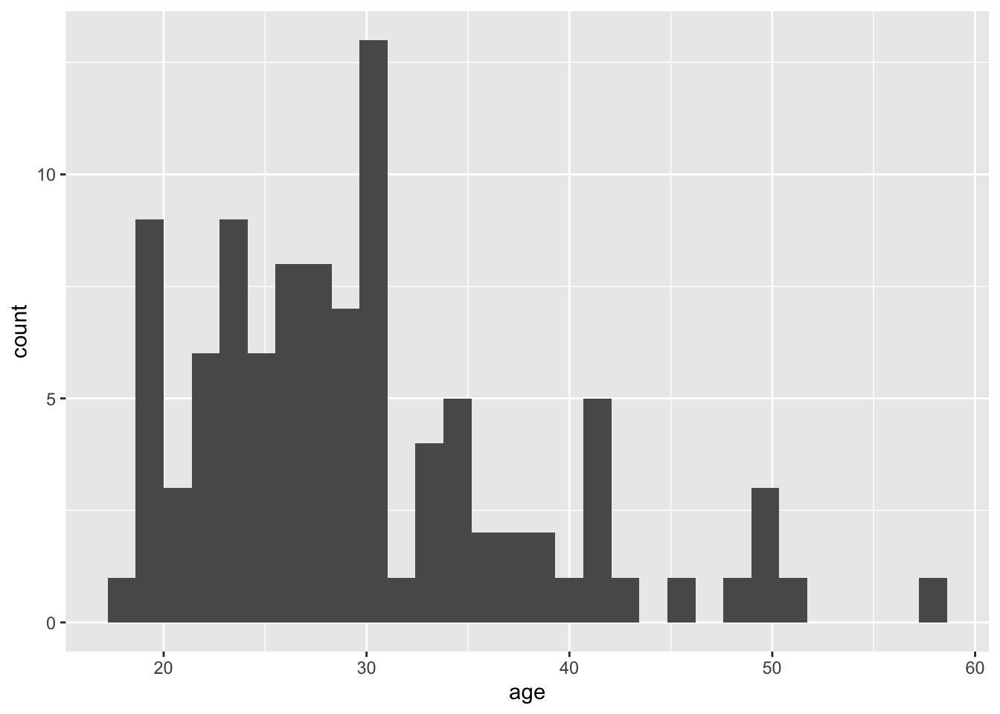

2 Setting up
2.1 Projects
Projects are a useful way of keeping all your code, data, and output in one place. To create a new project, open RStudio and click File - New Project - New Directory - New Project. You will be prompted to give the project a name and select a location for where to store the project on your computer. Once you have done this, click Create Project. Download the simulated dataset ldt_data.csv, vaccinations data vaccinations_by_age_group.csv, and the workbook SGSSS summer school data viz workbook.Rmd from this OSF project and then move them all to this folder.
The files pane on the bottom right of RStudio should now display this folder and the files it contains - this is known as your working directory.
2.2 .Rmd files
We have provided you with a pre-formatted Rmd file to use as a workbook for this workshop. You should see this in your Files pane. Click on the workbook and it will open up in your Source pane.
In R Markdown, anything written in a grey code chunk is assumed to be code, and anything written in the white space (between the code chunks) is regarded as normal text. You can insert a new code chunk with Ctrl + Alt + I ( or on OS X: Cmd + Option + I).
How to create a new Rmd file for group project and/or post workshop: File - New File - R Markdown. Name it, delete everything below line 12, and save it.
2.3 Loading packages
To load the packages that have the functions we need, use the library() function. Whilst you only need to install packages once, you need to load any packages you want to use with library() every time you start R or start a new session. Make a new code chunk, paste the following code in the area between the backticks, and run the code:
2.4 Loading data
To load the simulated data we use the function read_csv(). Make a new code chunk, paste the following code in it and run the code:
This code has created an object dat into which you have read the data from the file ldt_data.csv. This object will appear in the environment pane in the top right. Note that the name of the data file must be in quotation marks and the file extension (.csv) must also be included. If you receive the error …does not exist in current working directory it is highly likely that you have made a typo in the file name, have not included the file extension .csv, or that the data file you want to load is not stored in your project folder. If you get the error could not find function it means you have either not loaded the correct package, or you have made a typo in the function name.
2.5 Simulated dataset
For the purpose of this tutorial, we will use simulated data for a 2 x 2 mixed-design lexical decision task in which 100 participants must decide whether a presented word is a real word or a non-word.
2.5.1 Formatting the data
Normally data wrangling and cleaning is the most time-consuming part of doing data analysis in R. Today, we are going to give you already formatted data so we can focus on just data visualisation. Paste the below code into a new code chunk and run it to format the simulated dataset. If you want to know what each of the steps do, you can refer to the full tutorial here: https://psyteachr.github.io/introdataviz/index.html
Depending on the type of the plot, we are either using the dat dataframe, or the dat_clean dataframe - pay attention to the code for each task!
dat_clean <- pivot_longer(data = dat,
cols = rt_word:acc_nonword,
names_sep = "_",
names_to = c("dv_type", "condition"),
values_to = "dv") %>%
pivot_wider(names_from = "dv_type",
values_from = "dv") %>%
mutate(condition=as.factor(condition), language=as.factor(language))
dat <- mutate(dat, language=as.factor(language))2.5.2 Data overview
The dataset dat_clean has 200 rows (two rows for each participant: one for their responses to the nonword condition, and one to the word condition). We have the following columns:
-
Participant information:
-
id: Participant ID -
age: Age
-
-
Two between-subject independent variables (IV):
-
language: Language group (1 = monolingual, 2 = bilingual) -
condition: Word vs. non-word trials
-
-
Participants responses as the dependent variables
-
rt: Reaction time (ms) -
acc: Accuracy
-
2.6 ggplot2 and the layer system
There are multiple approaches to data visualisation in R; in this workshop we use ggplot2, which uses a layered grammar of graphics, in which plots are built up in a series of layers. It may be helpful to think about any picture as having multiple elements that sit over each other.
Importantly, each layer is independent and independently customisable. For example, the size, colour, and position of each component can be adjusted. The use of layers makes it easy to build up complex plots step-by-step, and to adapt or extend plots from existing code. Each layer is separated by a +. We’ll try this by making a simple histogram next!
2.7 Histogram
We are going to plot the distribution of participant age in a histogram, and add layers one-by-one to demonstrate how the plot is built step-by-step.
Step 1: This code tells R to access the ggplot function. The first argument tells R to plot the dat dataframe. In the aes function, you specify the aesthetics of the plot, such as the axes and colours. What you need to specify depends on the plot you want to make (you’ll learn more about this later) - for a basic histogram you only need to specify the x-axis (the y-axis will automatically be counts).
Step 2: You can see that the code above produces an empty plot - that’s because we haven’t specified which type of plot we want to make. We’ll do this by adding another layer: geom_histogram(). Geom is an expression of the type of plot you want to create.
`stat_bin()` using `bins = 30`. Pick better value with `binwidth`.
Step 3: By adding a new layer we can change the axis names:
`stat_bin()` using `bins = 30`. Pick better value with `binwidth`.Step 4: We can also change the theme of the plot:
2.8 Density plot
The layer system makes it easy to create new types of plots by adapting existing recipes. For example, rather than creating a histogram, we can create a smoothed density plot by calling geom_density() rather than geom_histogram(). The rest of the code remains identical.